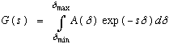
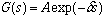
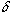

Laplace transform is the mathematical operation which relates a decaying
signal with the distribution of dampers which created it.

eq[1]
In the terms of this manual, G(s) is said to be in the direct space
(experimental data); whereas A(
 )
is in the reciprocal space.
)
is in the reciprocal space.
When there is only one well-defined dampers, the equation 1 simplifies to

eq [2]
The general problem consists in determining the damper distribution A(
),
given the measured signal G(s).
In the case where eq [2] is a correct description of the measured signal
(diffusion of monodisperse solutions for instance), Determination of the
parameters (A and
 )
can be simply performed by a least-square fit of the signal G(s). When the
equation 1 is to be used (polydisperse solutions), then the Laplace transform
has to be inversed. This is a well-known numerically difficult method, the
whole purpose of this module is to realise this inversion.
)
can be simply performed by a least-square fit of the signal G(s). When the
equation 1 is to be used (polydisperse solutions), then the Laplace transform
has to be inversed. This is a well-known numerically difficult method, the
whole purpose of this module is to realise this inversion.
The inverse Laplace analysis permits to describe the complete distribution of
dampers A(
)
as used in eq 1. This permits to analyze with the same ease, single exponential
decays (that will appear as a distribution with one single peak , whose width
is related with the accuracy of the estimate), but also sums of exponential
(with no assumption needed on the number of components) or even continuous
distribution.